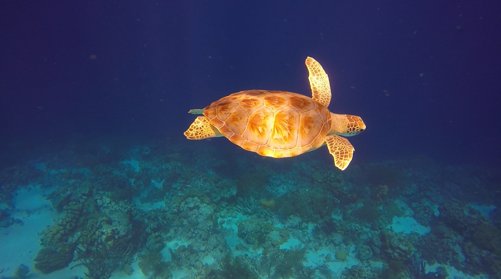
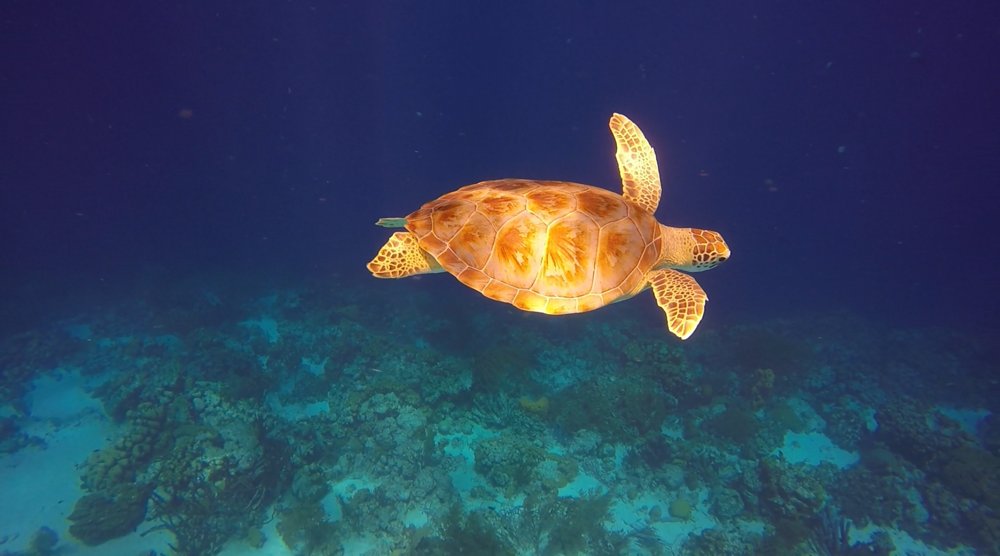

Mijn ervaring
 

Zelf ben ik ook op Bonaire geweest en heb hier gesnorkeld en leren duiken. Ik vind dit nog steeds erg leuk om te doen.
snorkelen
Ik snorkel al sinds dat ik klein was. Ik ben 4 keer op Bonaire geweest. Alle keren gingen we snorkelen met een boot die de Woodwind heet. Met deze boot vaar je naar Klein Bonaire. Hier is veel koraal nog intact en er leven onder andere schildpadden, inktvissen en murenen. Ook gaat er altijd een fotograaf mee met een hele goede onderwaterkamera hij heeft deze foto van mij gemaakt. Zelf maak ik ook foto's met een gopro, bijvoorbeeld deze foto van een schildpad.